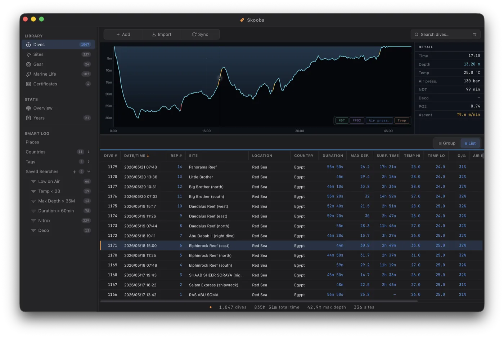
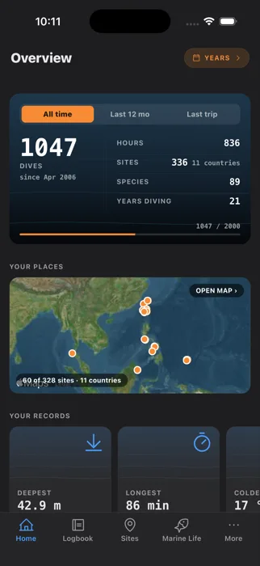
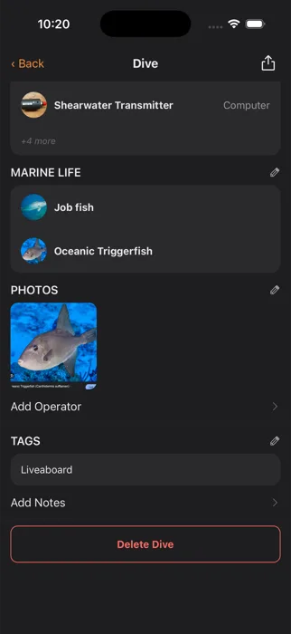
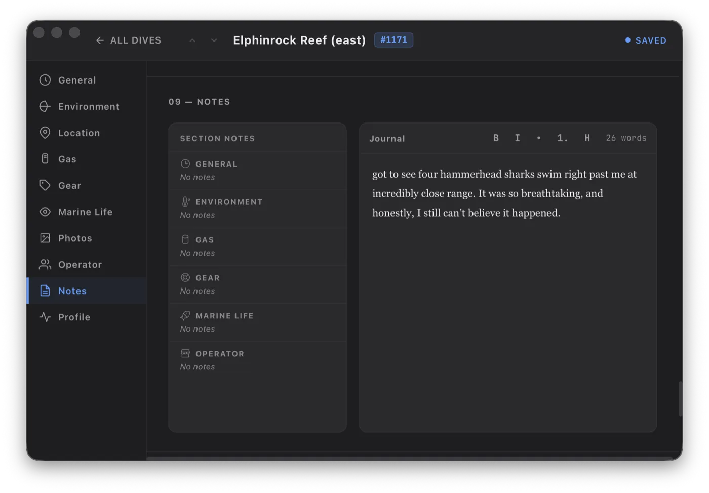

A native logbook that captures every dive with real precision — on your Mac and in your pocket — then gives your memories back to you: the milestones, the places, the firsts that made each one matter.


Garmin logs your dives into its own Dive app. Oceanic+ keeps them inside Apple Watch. Shearwater ties them to Shearwater Cloud. Move to a different computer and your history usually stays behind, trapped in an app you don't use anymore.
Skooba imports from all three — over Bluetooth or straight from the export file — so years of diving follow you, no matter what's on your wrist next.
Surface, and it's already half-logged. Pull the dive off your computer on your phone, drop a pin with your phone's own GPS even when your dive computer has none, jot down what you saw while it's fresh, and snap a photo. Get home, open Skooba on your Mac, and that dive is already there — synced through your own iCloud. Round it out at a proper desk: the marine life you spotted, the gear you dove in, who was down there with you, and the story worth remembering. Change anything, and it syncs straight back to your phone.


Anyone can store your dives. Skooba gives them back — surfacing the milestones and firsts hidden in the data, year after year. Your hundredth dive. Your deepest. The first time you saw a manta. It reads less like a spreadsheet and more like a diary of your life underwater.
Every year, Skooba looks back through your logbook and resurfaces the moments worth reliving.
Every site you've ever dived, pinned on one map. Watch your world fill in — reef by reef, country by country — and relive the trips behind it.
The memories are the point — but the fundamentals are here too, fast and native, so getting your dives in never gets in the way.
Download dives over Bluetooth from your Shearwater and more — no cables, no cloud in the middle.
Bring your history in from MacDive, Subsurface UDDF, Garmin FIT and Oceanic+ — deduped and ready.
Depth over time with ascent-rate warnings, deco, ppO₂ and temperature — the whole dive at a glance.
Catalog your dive sites, the marine life you saw, your kit and your certifications — all cross-linked.
Slice your diving any way you like — depth, gas, buddies, seasons — and spot the patterns of a lifetime.
One file holds your entire logbook — dives, photos, everything. Move it between your own Macs any time.
Skooba keeps your entire logbook in a single local database on your Mac. Nothing is uploaded, nothing needs a login, and your dives are yours to back up and carry between machines whenever you like.
Skooba is almost ready to dive in with you.